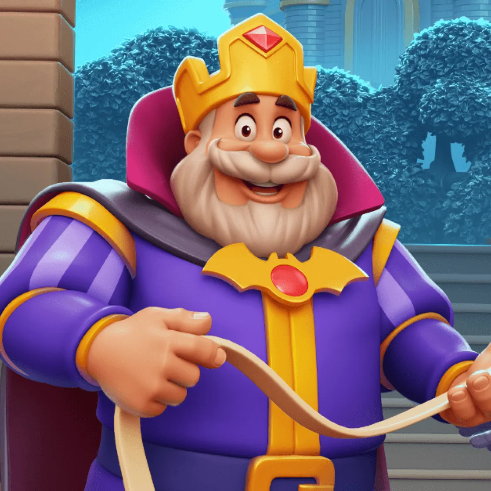
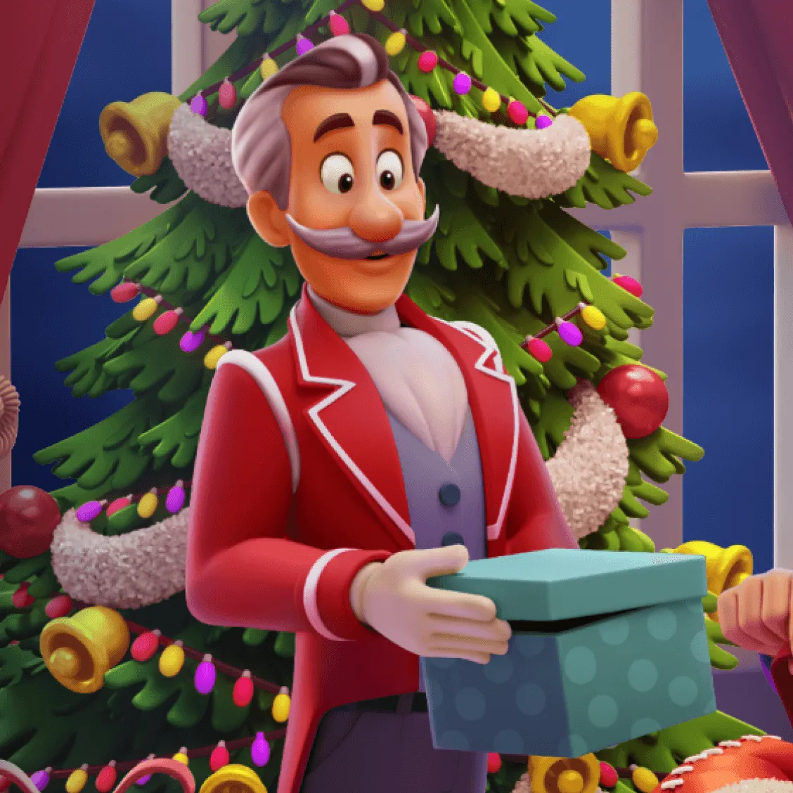
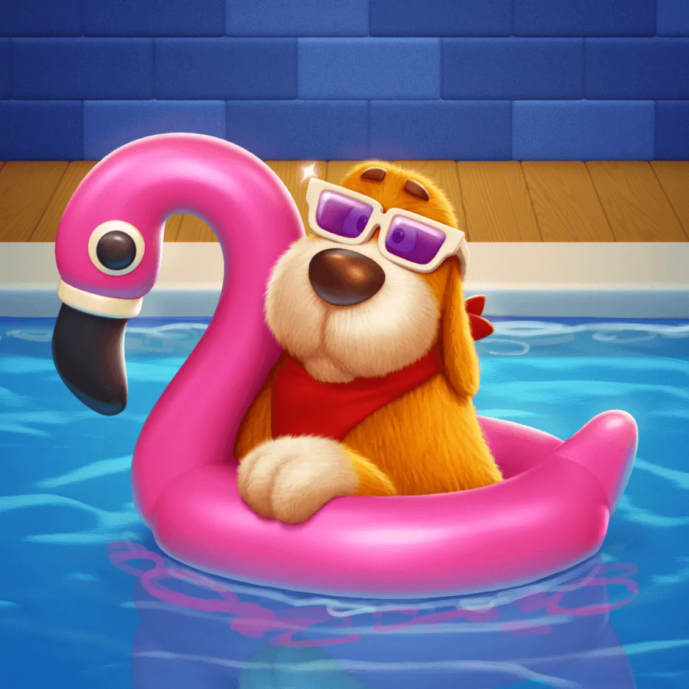
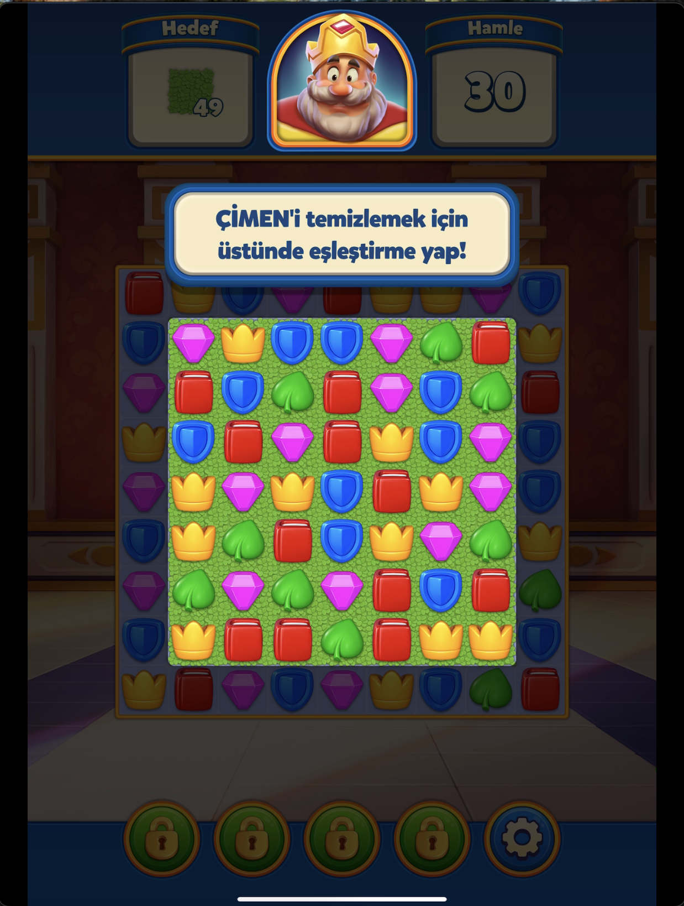
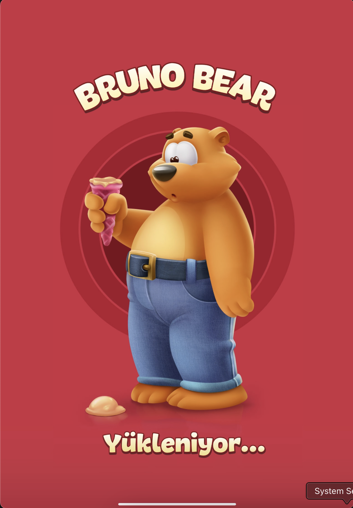
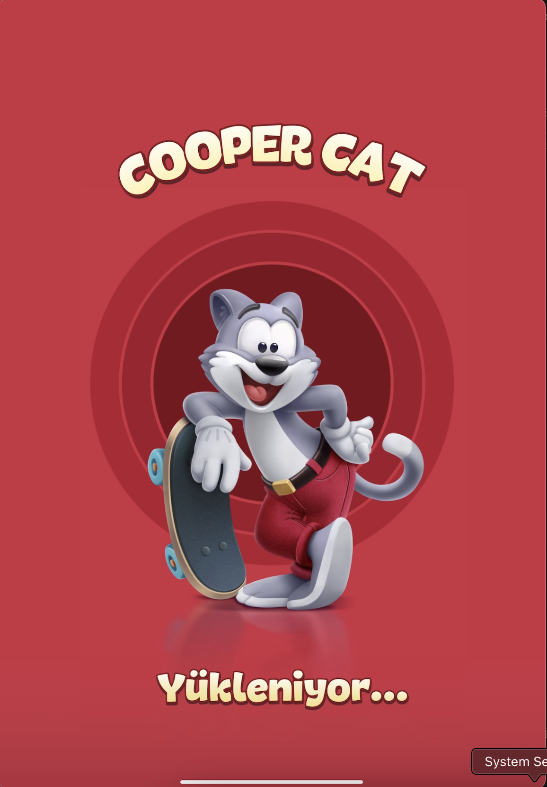
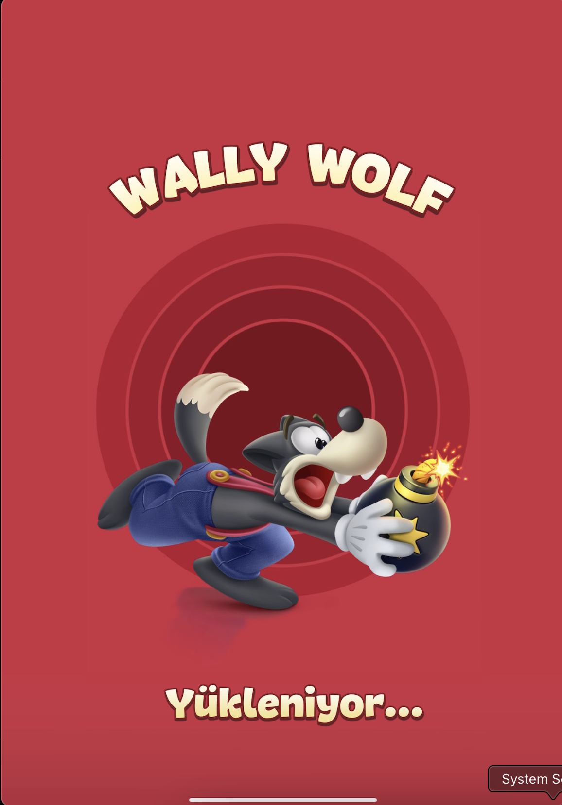
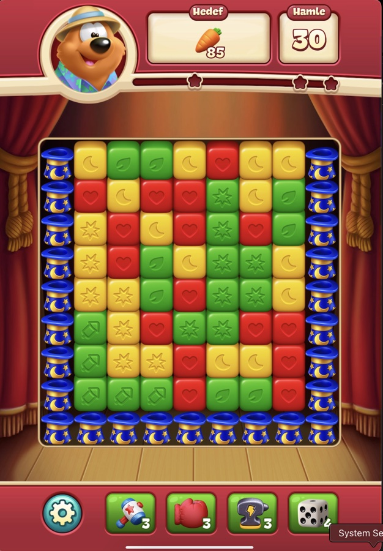
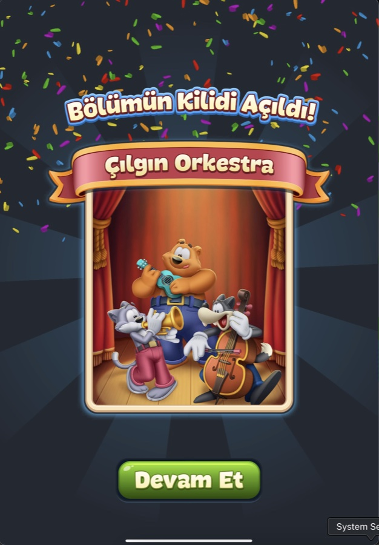

Görsel Dil
Royal Match
Kral, Uşak, Köpek
Üç karakter, üç ayrı renk kodu taşıyor. Kadrajdaki malzeme ve duruş farkları, kral ile hizmetkâr ile evcil hayvan arasındaki hiyerarşiyi daha ilk bakışta okutuyor.

Mor bir pelerin, altın şerit işlemeler, fuşya bir yaka astarı; taçta tek bir yakut, göğüste yarasa kanadı biçiminde altın bir broş. Gür, beyaza dönmüş bir sakal ve iri yuvarlak gözler, sert bir hükümdar yerine sıcak ve yaklaşılabilir bir yüz kuruyor. Mor ve altın, klasik bir asalet kodlaması; kırmızı taş vurguları da güç ve otorite hissi katıyor.

Kırmızı ve beyaz bir garson üniforması, beyaz eldivenler, özenle taranmış gri saç ve gri bir bıyık. Bu kırmızı, onu Robert'ın mor-altın otorite paletinden bilinçli olarak ayırıyor: renk burada kral ile hizmetkâr arasındaki farkı tek bakışta kuruyor. Dik ve resmi duruşu, elindeki hediye kutusuyla birlikte bakım rolünü jestle de pekiştiriyor. Taht Odası'ndaki bir vitray pencerede de karşımıza çıkıyor (bkz. Bölüm 4).

Altın sarısı tüyleri ve sarkık kulaklarıyla, kırmızı bandanası ve mor güneş gözlüğüyle tam bir tatilci havası taşıyor. İnsan karakterlerden farklı olarak tüy dokusuna belirgin ölçüde daha fazla render detayı verilmiş, bu da onu daha çok bir peluş oyuncağa benzetiyor. Bandanadaki kırmızı, Winston'ınkiyle aynı aile ama burada bir otorite işareti değil, sadece eğlenceli bir aksesuar. Taht Odası'nda Robert'la aynı vitray pencerede, ayaklarının dibinde resmedilmiş (bkz. Bölüm 4).
Sanat Yönü: Tek Bir Kural, Her Yerde
Dream Games kendi sanat yönünü şöyle özetliyor: canlı ve davetkâr bir dünya, çağdaş teknolojiyle nostaljik bir tasarım dilinin arasında duran ve gerçeklikten tamamen kopmadan kendi yorumunu katan bir stil. Abartıya kaçmıyor, fazla karikatürize de olmuyor.
Bu ilke, oyunun tamamında tek ve tutarlı bir kurala dönüşüyor: hiçbir elementte keskin köşe yok. Dört farklı kategoriden dört görsel bunu ayrı ayrı doğruluyor:


Renk Paleti
Önceki bölümlerde renk hep dolaylı olarak geçti: karakterlerin hiyerarşisinde, sahnelerin tonunda. Burada bir araya topluyoruz.
Beş item, beş renk
Eşleşme item'larının kendi paleti sabit ve doygun; her renk tek bir item'a bağlı, karışıklık riski yok.
Sahneye göre değişen palet
Her oda kendi baskın renklerini taşıyor. Aşağıdaki tonlar bu sayfadaki gerçek sahne görsellerinden örneklendi, uydurma değil.
Değişmeyen katman: UI chrome
Odalar farklı palet taşısa da, HUD'un kendisi hiç değişmiyor. Hedef ve Hamle panelleri her zaman aynı krem tonunda, arkalarındaki çubuk her zaman aynı mavide, çerçeveleri her zaman aynı altında duruyor. Oyuncunun gözü hangi odada olursa olsun aynı yere bakıyor.
Tek Kale Değil, Birkaç Oda
Kale tek bir dekor kullanmıyor. Her mekân kendi renk paletini ve kendi mimari dilini kuruyor; bu çeşitlilik Dream Games'in kendi oda listesiyle (Throne Room, Dining Room, Garden, Library, Music Room, Aquarium...) örtüşüyor. Bunlara ek olarak kırmızı-altın bir salon ile turkuaz duvarlı, dama tahtası zeminli ayrı bir iç mekân daha var.
Taht Odası
Tören ağırlıklı bir kompozisyon kuruyor: koyu kırmızı duvarlar altın fleur-de-lis deseniyle işlenmiş, mor kadife perdeler ve üç taçlı bir sancak tavandan sarkıyor. Boş, yakut taşlı altın bir tahtın iki yanında zırhlı birer heykel nöbet tutuyor: biri mavi bir kalkan, diğeri kırmızı bir kitap taşıyor. Arkadaki iki vitray pencerede sol tarafta King Robert ve köpeği Duke, sağ tarafta Winston resmedilmiş; oyunun üç karakterinin bir arada göründüğü ilk yer burası. Kırmızı halı, dama desenli mermer zemin ve tam simetrik yerleşim, mekâna resmi ve ağırbaşlı bir hava veriyor.

Kale ve Bahçesi
Tam tersi bir ton kuruyor. Lavanta ve altın tonlarında, sivri mor kulelerine kırmızı flamaların iliştirildiği masalsı bir siluet var; önünde Fransız bahçesi tarzında simetrik budanmış çalılar, mor çiçek bordürleri, ortada parıldayan bir fıskiye ve onu koruyan iki kuğu heykeli yer alıyor. Arkada göl ve yeşil tepeler, üstünde açık mavi bir gökyüzü uzanıyor: davetkâr ve ferah, taht odasının ağır tören havasının tam karşıtı.

Mutfak (Mini Oyun)
Standart odalardan tamamen kopuk, ayrı bir mod: kralın alev almış bir mutfağı, tuğla duvarlar, ocakta yükselen gerçek ateş, devrilmiş bir sepet ve yerde bir hindi. Board da bu sahneye kilitli: H harfi şeklinde, iki üst köşesine yerleşmiş birer vana/boru ile çerçeveleniyor. Diğer üç odanın "resmi kale" diline karşı buradaki ton acil ve gündelik, dekor bir mini oyunun arka planı olarak tasarlanmış (detaylar için bkz. Animasyon, Bölüm 8).

Okunabilirlik
Oyun tahtası her sahnede arka plandan daha açık ve soluk bir panel üzerinde oturuyor. Bu, yoğun duvar dokusunun ya da dama tahtası zemininin okunabilirliği bozmasını önleyen bilinçli bir katman ayrımı.

Hedef ve Hamle gibi başlıklar hep kendi opak, krem renkli paneli içinde duruyor, hiçbir zaman doğrudan sahne arka planına bindirilmiyor. Arka plan ne kadar karmaşık olursa olsun, UI metni bundan etkilenmiyor.

Diğer Gözlemler
Engel kuralları doğrudan ekran içi metinle öğretiliyor: "KUTUyu kırmak için yanında eşleştir!", "ÇİMENİ temizlemek için üstünde eşleştirme yap!"


Tek hedefli seviyelerin yanında, üç farklı hedefin aynı anda istendiği seviyeler de norm: örneğin mücevher 40, taçlı kutu 16 ve çimen 16 birlikte isteniyor.
Toon Blast
Üç Maskot
Royal Match'in tek merkezi figürünün (Robert) aksine Toon Blast üç eşit ağırlıklı karakterle açılıyor, üçü de kendi adına ayrılmış bir yükleme ekranına sahip.

Turuncu bir ayı, elinde dondurma, kot pantolon ve kemer. Seri boyunca kostüm değiştiriyor (Bölüm 10'da L3'te safari şapkası takıyor); bu değişim sahne değişimine bağlı olabilir ama henüz doğrulanmadı.

Gri, kaykaylı bir kedi, kırmızı tulum giyiyor. Açılış sahnesinde karavanı o kullanıyor; enerjik ve genç bir karakter olarak konumlanmış.

Koyu gri bir kurt, elinde fitili yanan bir bomba, mavi tulumuyla "yaramaz" bir hava taşıyor. Açılış sahnesinde karavanın çatısında.
Renk ve Erişilebilirlik, Baştan İtibaren
Royal Match'te "renk körü biri item'ları ayırt edebilir mi" hâlâ açık bir soruyken, Toon Blast bu soruyu daha ilk küpten itibaren kapatmış: dört rengin dördünde de küpün üstünde sabit bir ikon var, sadece renge güvenmiyor.
Sahne Değişiyor, Bölümle Senkron
Royal Match'in oda-oda değişen sahnelerinin aksine, L1-20 aralığında tek bir sahne gözlendi: çöl yolu, kaya oluşumları, kaktüsler, uzayan bir asfalt. Bu aralıkta bir sahne değişimi yok.
Sahne sabit kalsa da board'un kendisi bilinçli şekiller çiziyor: belirli seviyelerde küpler bir araya gelip tanınabilir bir siluet oluşturuyor (ör. L10 ve L13).

L21'de sahne değişiyor: arka plan kırmızı kadife perdeli, ahşap zeminli bir tiyatro sahnesine dönüyor. Bu değişim rastgele değil, aynı anda açılan "Çılgın Orkestra" bölüm kilidiyle senkron: bölüm açılış ekranı üç maskotu aynı sahnede enstrümanlarla gösteriyor (Bruno Bear gitar, Cooper Cat trompet, Wally Wolf çello). Royal Match'in adlandırılmamış bölge-bazlı sahne ritmine benzer bir yapı.
Bir karşı-bulgu da var: sahne değişmesine rağmen Bruno Bear'ın kostümü aynı kalıyor (safari şapkası + Hawaii gömleği, L3'ten beri).


Tipografi: İki Katman
Royal Match'teki gibi Hedef/Hamle rakamları her zaman dedike, sade bir zeminde duruyor, en yoğun kombinasyon efektlerinde bile doğrudan board'a bindirilmiyor.
Marka fontu (yuvarlak, kalın, krem dolgu + kahverengi kontur) başlıklarda ve kutlama metinlerinde; ayrı, daha keskin bir "rozet fontu" (beyaz + kırmızı kontur) sadece indirim/aciliyet etiketlerinde kullanılıyor. "Oyunun sesi" ile "satış anonsu" bilinçli olarak görsel olarak ayrılmış.
Çapraz Analiz
Grafik bölümlerini aynı sırayla yazmamızın sebebi buydu: yan yana koyunca nerede aynı dili konuştukları, nerede bilinçli olarak ayrıştıkları netleşiyor.
| Boyut | Royal Match | Toon Blast |
|---|---|---|
| Renk körü erişilebilirliği | Şekil bazlı ayrışma var | Baştan itibaren sabit ikon |
| Sahne değişim mantığı | Oda-oda, oyuncunun yıldız biriktirip "Yap" tuşuna basmasına bağlı | L1-20 sabit tek sahne, L21'de bölüm kilidiyle senkron sabit eşik |
| Karakter kompozisyonu | Hiyerarşik üçlü: kral + uşak + köpek, renkle kodlanmış otorite/hizmet ayrımı | Eşit statülü üçlü: üç maskot, kutlamada hep birlikte |
| Sayaç okunabilirliği | Her zaman dedike, sade zemin | Her zaman dedike, sade zemin (aynı ilke) |
| Font hiyerarşisi | İki katman: marka fontu + rozet fontu | İki katman: marka fontu + rozet fontu (aynı ilke) |
| Mini oyun sahne çeşitliliği | 3 ayrı mini oyun, 3 ayrı özel sahne | En az 2 temalı varyant, tek bir ödül dili |